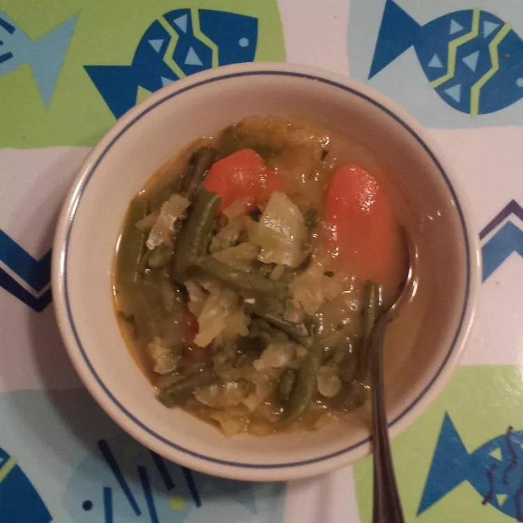

idli

Description
A popular South Indian steamed breakfast dish which
is made with the combination of rava (semolina) and yogurt.
Ingredients
-
2 tablespoons vegetable oil
-
½ teaspoon mustard seed
-
½ teaspoon cumin seeds
-
1 teaspoon split Bengal gram (chana dal)
-
10 fresh curry leaves
-
1 dried red chile pepper, crushed
-
1 tablespoon cashews, crushed
-
1 teaspoon minced fresh ginger root
-
1 teaspoon diced green chile pepper
-
¼ teaspoon asafoetida powder (hing)
-
1 cup semolina (sooji rava)
-
½ cup yogurt
-
2 tablespoons carrots, chopped
-
salt to taste (optional)
-
1 teaspoon fruit salt (such as Eno®)
Steps
-
Heat vegetable oil in a pan over medium-low heat. Add mustard seeds, cumin seeds,
and chana dal and saute for a few seconds. Add curry leaves, dried red chile, cashews, ginger, green chile peppers, and hing and saute until cashew nuts turn
slightly brown, 3 to 4 minutes. Add semolina and cook and stir over low heat until slightly browned; remove mixture to a plate and let cool completely, about 10 minutes.
-
Add yogurt and carrot to the mixture and mix well. Add water as needed to reach desired consistency.
Season with salt to taste. Cover and let sit for 15 minutes.
Check batter consistency again; add more water if needed.